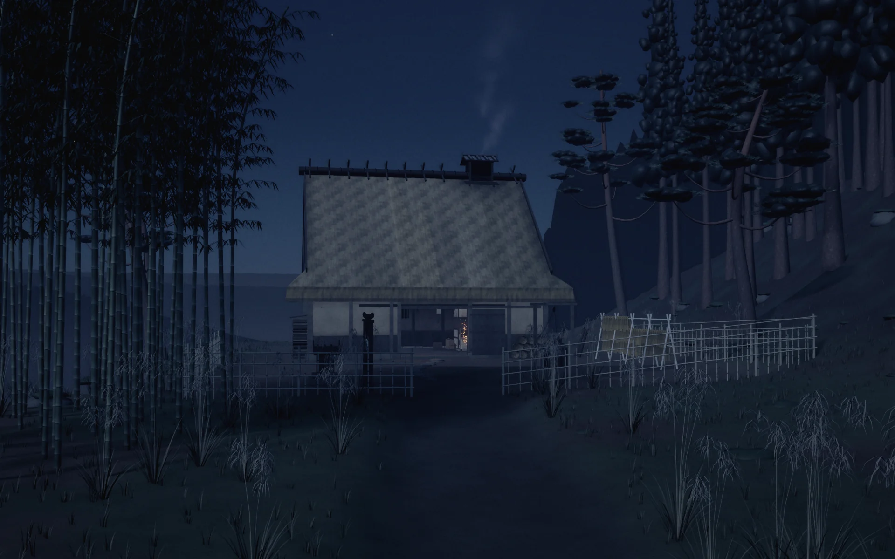
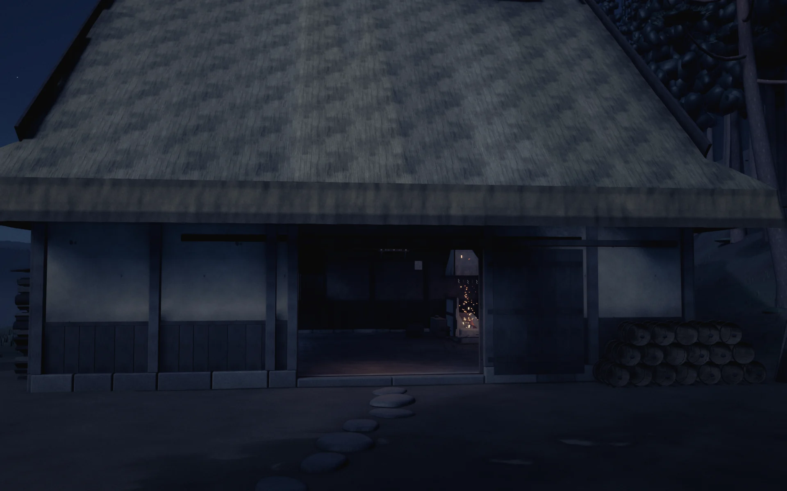
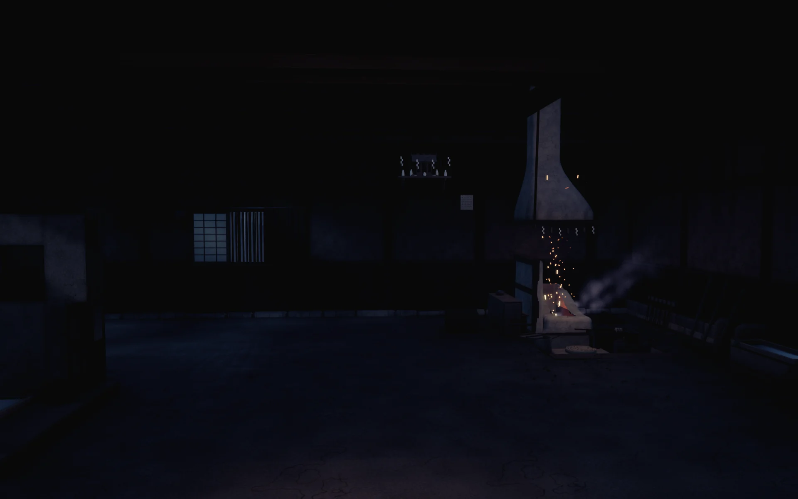
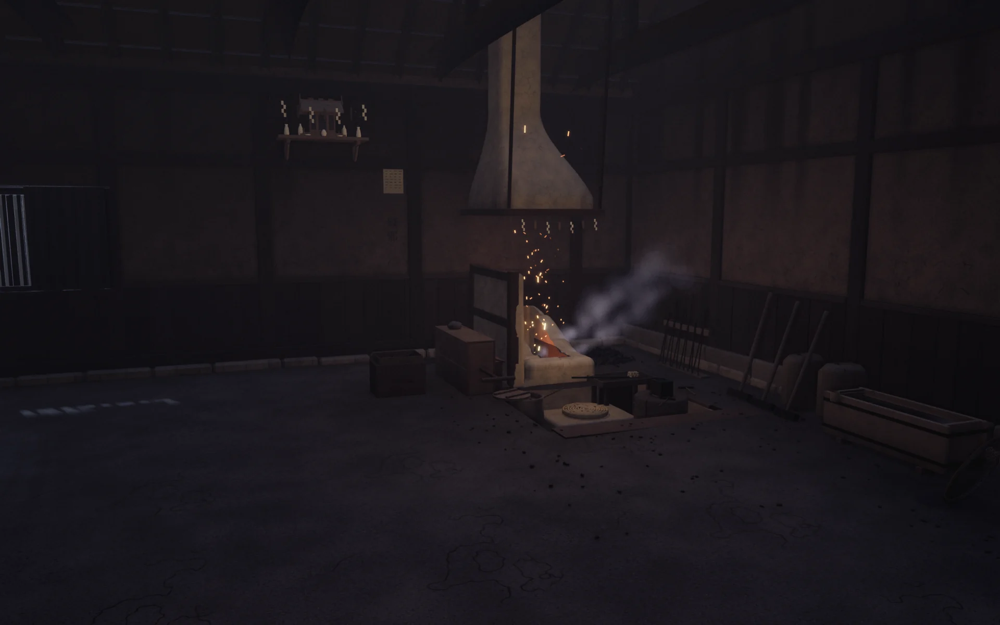
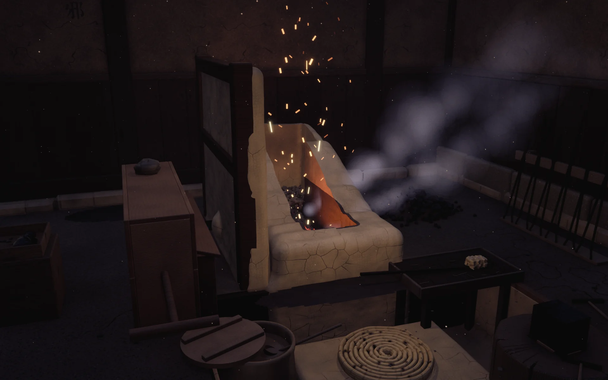

HAMON 刃文 · The forge
The forge
A Japanese forge, a kajiba, built in HAMON Engine. Walk in from dusk: the approach, the yard, the threshold, and the hearth.





Native HAMON Engine renders (CPU, 1920×1200, 64 samples), 26 October 2026. Work in progress: the togishi’s corner and the seated figure are still being built.